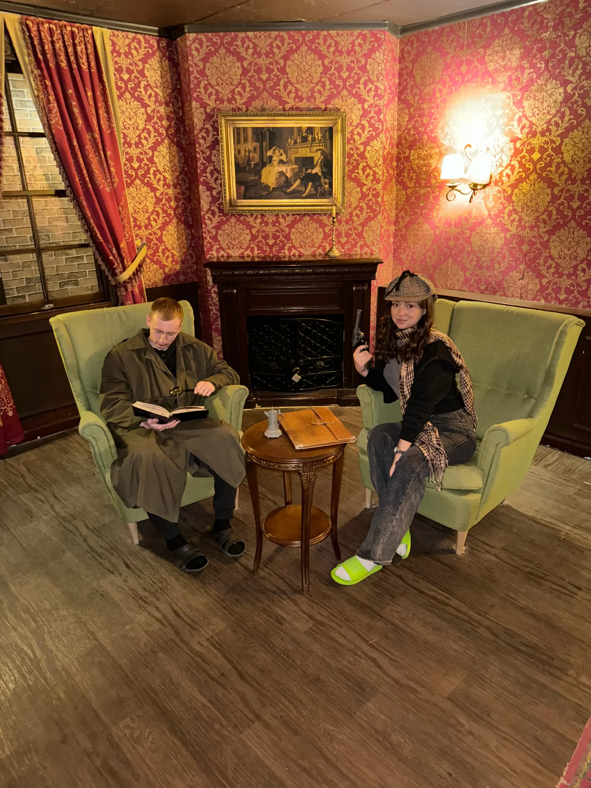
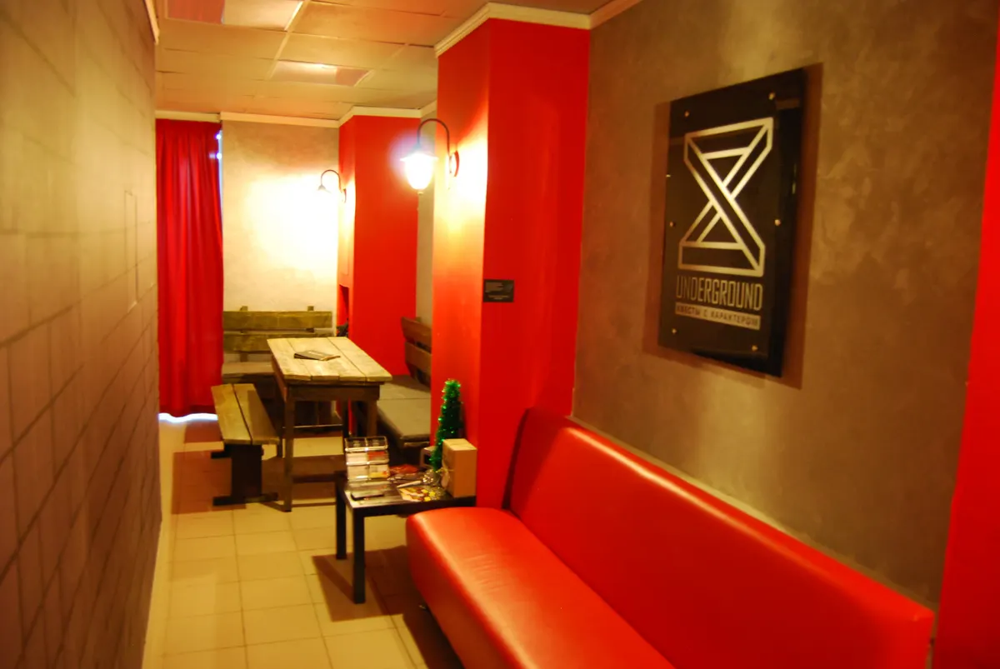

Квесты · Пермь
Под землей: квесты и игры в Перми для компании, семьи и праздника
Выберите игру, дату и время. Бронирование - в одном сообщении.
- Запись одним сообщением
- Ждём: ежедневно, 10:00–22:30
- 5,0 и 70 отзывов на Яндекс.Картах

Направления и цены
Стоимость назовёт администратор при записи.
Что можно выбрать
- Квест «Портрет Дориана Грея»по отзывам: логичные задания и декорацииуточнить
- Квест «Последнее дело Шерлока Холмса»по отзывам: задачки, над которыми можно поломать головууточнить
- Подарочный сертификатуказан в особенностях на карточкеуточнить
Как записаться
Пишете нам
Выберите направление, дату и время в форме ниже или напишите в мессенджер.
Уточняем детали
Администратор подтверждает время и отвечает на вопросы.
Приходите
Адрес: Пермь, улица Клары Цеткин, 14.

Что пишут гости
Логично выстроенные задания
В отзыве: первый квест, настолько логично выстроенный.
Подходит взрослым и детям
В отзыве: играли двое детей 12 и 17 лет с взрослыми.
Атмосфера погружения
Гости пишут про тёмные комнаты, свет и звуки.
Отзывы с Яндекс.Карт
«Ходили семьёй на Портрет Дориана Грея. Очень понравилось Атмосфера, антураж, задания на подумать. Администратор очень приветливая девушка, все объяснила, рассказала. Время пролетело незаметно.»
Анастасия Худоченко · 9 мая
«интересный квест, очень вежливые и приятные администраторы, ходили на квест "последнее дело Шерлока Холмса", квест не страшный, никто не пугает, не выпрыгивает, не орёт, в общем все как хотелось пришлось поднапрячься, боялись что не успеем пройти, тк в первой комнате провели 35 минут, но квест прошли успешно и закончили даже раньше в общем, советую всем, для любого возраста будет интересно»
Мария С. · 27 апреля 2025
«Очень понравился квест Шерлок Холмс ! Проходили вдвоем с сыном 10 лет ! Справились! Было интересно, сложно , но по силам) брали подсказки раза 3-5 😀»
Мария Ш. · 20 апреля 2025
Отзывы с карточки на Яндекс.Картах.
Частые вопросы
Как записаться?
Выберите направление, день и время в форме на странице или напишите в мессенджер. Администратор подтвердит запись.
Где вы находитесь?
Пермь, улица Клары Цеткин, 14. ежедневно, 10:00–22:30.
Сколько это стоит?
Стоимость назовёт администратор при записи. Актуальные цены уточняйте у него.
Запишитесь - ответим в течение дня
- Адрес
- Пермь, улица Клары Цеткин, 14, Пермь
- Часы
- ежедневно, 10:00–22:30
- Телефон
- +7 (906) 888-82-63